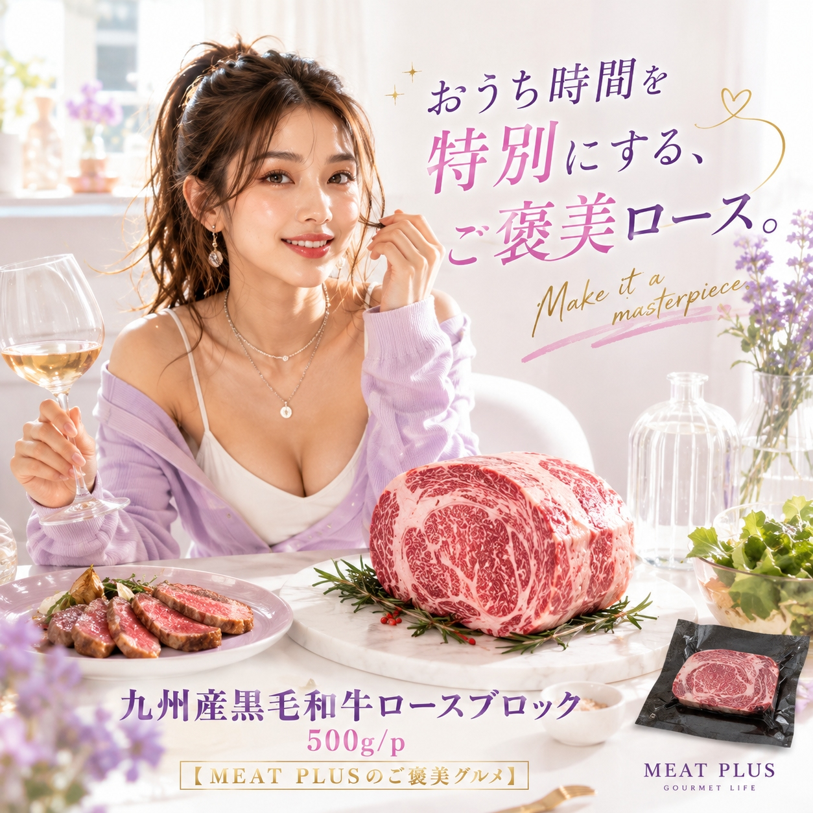
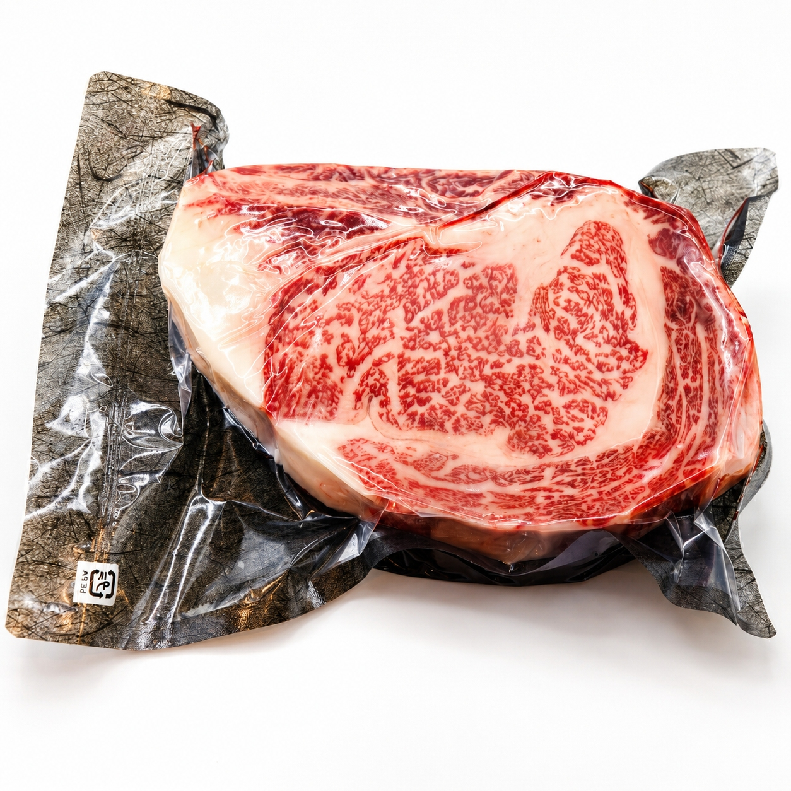
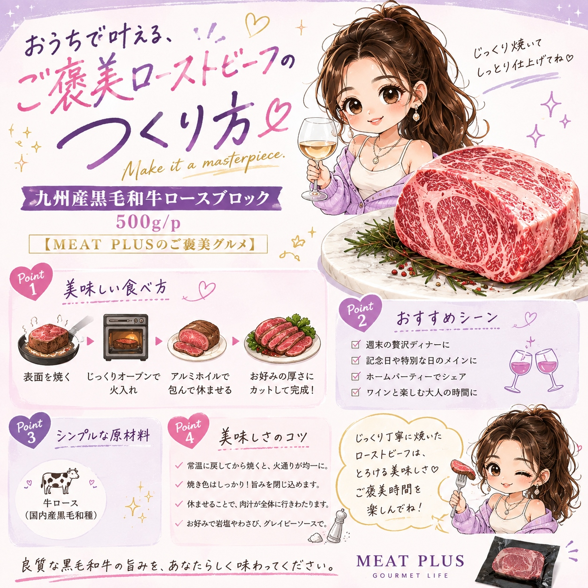
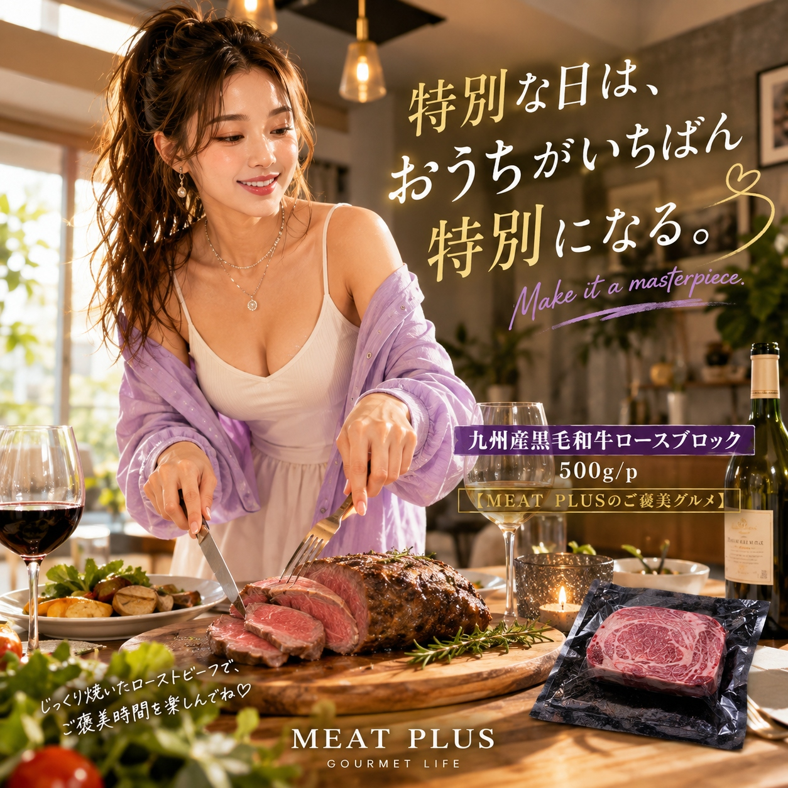

SCENE 01

a 牛肉
九州産黒毛和牛ロースブロック
【商品名案】 1. 特別な日のごちそうに A4等級以上 九州産 黒毛和牛 ロースブロック 500g/1kg 塊肉で楽しむ贅沢 ローストビーフ ステーキ BBQ ギフトにも最適 2. 食卓が華やぐ本格派の味わい 九州産黒毛和牛 A4ランク以上 ロース 塊肉 500g/1kg とろける霜降りと赤身の旨み パーティーや贈答用に 冷凍 3. おうちで極上ディナーを A4等級以上 九州産黒毛和牛 ロース ブロック肉 500g/1kg 柔らかな肉質 上品な脂の甘み ローストビーフや厚切りステーキに 【キャッチコピー】 食卓がレストランに変わる、A4等級以上のとろける九州産黒毛和牛。 【商品説明文】 特別な日の食卓に、ひときわ輝く主役はいかがですか。九州の豊かな自然の中で丹精込めて育てられた黒毛和牛の中から、A4等級以上のものだけを厳選したロースブロックをお届けします。きめ細やかに入った美しい霜降りがもたらす、とろけるような口どけと上品な脂の甘み。そして、噛みしめるほどに広がる赤身本来の濃厚な旨み。その絶妙なハーモニーは、まさに至福の味わいです。塊肉だからこそ、ローストビーフにすればしっとりとジューシーに、厚切りステーキにすれば圧倒的な満足感をお楽しみいただけます。ご家族のお祝いや、大切な仲間が集まるホームパーティー、BBQで、この贅沢な塊肉が最高の笑顔と感動をお届けします。特別な時間を彩る逸品を、ぜひご賞味ください。 【おススメポイント】 ・【A4等級以上の厳選品質】九州の恵まれた大地で育った黒毛和牛の中から、肉質等級A4以上のものだけを厳選。美しい霜降りと赤身の深いコクが織りなす格別の味わいです。 ・【塊肉ならではの多彩な楽しみ方】お好みの厚さで贅沢なステーキに、じっくり火を通してジューシーなローストビーフに。BBQやキャンプでも主役になること間違いなしのブロック肉です。 ・【選べる2サイズで用途も色々】ご家族でのお祝いには500g、ホームパーティーや大切な方への贈り物には1kgと、シーンに合わせてお選びいただけます。 ・【鮮度を保つ冷凍でお届け】美味しさをそのまま閉じ込めて冷凍しました。発送日より3ヶ月の賞味期限で、お好きなタイミングで本格的な味わいをお楽しみいただけます。 【FAQ】 1. 一番おいしい解凍方法を教えてください。 冷蔵庫でゆっくり時間をかけて解凍するのがおすすめです。調理する半日～1日前に冷凍庫から冷蔵庫に移してください。お肉の旨みや水分の流出を最小限に抑え、美味しくお召し上がりいただけます。 2. ローストビーフを作る際のコツはありますか？ 調理を始める30分～1時間ほど前に冷蔵庫から出し、お肉を常温に戻しておくことがポイントです。そうすることで、中心部まで均一に火が通りやすくなり、よりジューシーで柔らかな仕上がりになります。 【商品情報】 商品名: 九州産黒毛和牛ロースブロック 商品規格: 500g/p・1ｋｇ/ｐ 原材料: 牛ロース（国内産黒毛和種） 原産国: 日本 製造地: 日本 賞味期限: 発送日より3ヶ月
公式サイトへ移動します。価格・在庫・配送条件は移動先で最終確認してください。



PRODUCT INFORMATION
牛ロース（国内産黒毛和種）
MEAT PLUS OFFICIAL SHOP
仕入れ・加工・梱包・発送まで自社で行うMEAT PLUSの公式オンラインショップでご注文いただけます。
公式オンラインショップで購入する